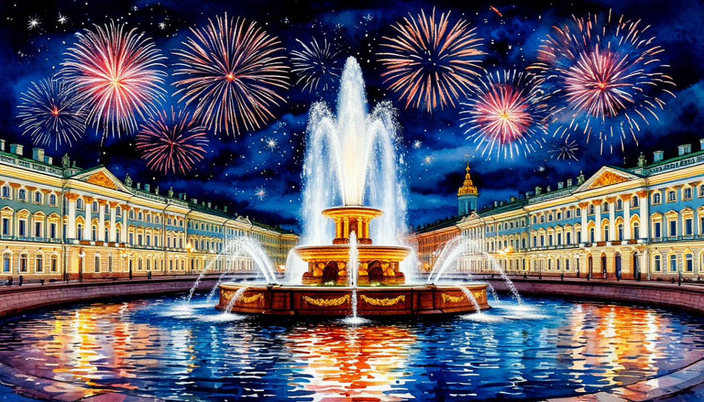

Открытие фонтанов в Санкт-Петербурге

Даты тура: с 14 мая (чт) по 18 мая (пн)
Стоимость тура:
- 25 600 р. - взрослый
- 25 400 р. - пенсионеры/студенты/школьники
- 31 800 р./чел - одноместное размещение
- - Территория Петропавловской крепости
- - Казанский собор
- - Праздник открытия фонтанов в Петергофе
- - Царское село
- - Кронштадт с Морским собором
- - Царское село с Екатерининским парком
- - Гатчина
1 день:
- 17-00- выезд из Костромы от ТРЦ "РИО"
2 день:
- Прибытие в Санкт-Петербург.
- Завтрак в кафе города.
- Обзорная экскурсия по городу «Град позолоченных соборов, Дворцов изящных и палат…»: знакомство с историей города Петра от основания до наших дней, с великолепными архитектурными ансамблями парадного центра Петербурга. Вы полюбуетесь величественными архитектурными ансамблями Дворцовой и Сенатской площадей. Осмотрите внешне потрясающей красоты соборы – Исаакиевский и яркий, неповторимый Храм Спас на Крови. Полюбуетесь ансамблем Адмиралтейства и поклонитесь великому реформатору Руси, «отцу» Санкт-Петербурга – Петру I, у подножия его знаменитого на весь мир памятника «Медный всадник».
- Экскурсия в Строгановский дворец.
- Стоимость 1300 руб./чел. – все категории.
- Строгановский дворец в центре Петербурга — уникальное здание в стиле барокко, построенное в XVIII веке одним из самых известных архитекторов того времени — Ф. Б. Растрелли.
- Далее обзорная экскурсия, где Вы познакомитесь с историей одной из самых знаменитых семей России, узнаете где находился первый минералогический кабинет в Петербурге, увидите уникальные интерьеры дворца и картинную галерею.
- На экскурсии Вы также познакомитесь с выставкой «Русские императорские сервизы», посвященной сервизам, созданным по Высочайшему заказу на Императорском фарфоровом заводе и увидите около 200 произведений, изготовленных для определенных императорских и великокняжеских резиденций, а также коронационные сервизы, выполненные по случаю бракосочетания российских монархов.
- Экскурсия по территории Петропавловской крепости «Здесь будет город заложен…":
- Посещение Казанского собора -неповторимый памятник русскому оружию: в склепе северного придела был захоронен М.И. Кутузов. Во время обзорной экскурсии вы совершите остановку у Легендарного крейсера «Аврора» – корабля-музея, который находится на вечной стоянке у Петроградской набережной.
- Обед в кафе города.
- Размещение в гостинице
- Свободное время
За дополнительную плату (по желанию) СТРОГО ПРИ БРОНИРОВАНИИ ТУРА:
За дополнительную плату (по желанию):
- 22:00 Ночная автобусная экскурсия «Мифы и легенды Петербурга»
- Северная столица – уникальный, удивительный мегаполис, полный не только символичных, знаковых достопримечательностей. Это настоящий кладезь загадок, легенд и тайн. Всего за три столетия город наполнили разнообразные мифы, полные мистики. Некоторые загадки Санкт-Петербурга кажутся поразительно явственными. Хотите в этом убедиться? Отправляйтесь на нашу экскурсию. Так же Вас ждет незабываемое зрелище – разведение мостов.
- Стоимость 1 500 руб./взрослые, 1 300 руб./дети до 15 лет.
3 день:
- Завтрак в гостинице "шведский стол".
- Экскурсия "Дорогою царей и фаворитов" - автобусная экскурсия по старой Петергофской дороге, в ходе которой вы узнаете о дворцовых и парковых ансамблях, расположившихся вдоль нее.
- Праздник открытия фонтанов в Петергофе! Праздник фонтанов давно уже стал одним из "чудес" Петербурга, таким же, как Белые ночи, Эрмитаж или Янтарная комната.
- Только один раз в году можно увидеть это поистине волшебное, завораживающее зрелище: перед Большим Петергофским дворцом Весенний праздник фонтанов, который по традиции откроет летний сезон в Государственном музее-заповеднике "Петергоф"! Вас ждёт торжественная церемония и праздничные мероприятия на Большом каскаде, которые завершатся залпами салюта.
- А так же Вы совершите экскурсию по Нижнему парку фонтанов: полюбуетесь знаменитым «Самсоном, раздирающим пасть льва», дворцом Монплезир, Дворцом Марли, удивительными шутихами Торжественное открытие фонтанов в Петергофе:
- - мacштaбная тeaтpaлизoвaнная пocтaнoвка;
- - тopжecтвeнный пуcк фoнтaнoв Пeтepгoфa и вoдное шoу;
- - костюмированное представление
- - пушeчный зaлп пo зaвepшeнии пpaздникa.
- Bce этo дeйcтвo будет пpoиcxoдить нa плoщaди вoзлe Бoльшoгo Kacкaдa, нa фoнe вeличecтвeннoгo двopцa.
- Переезд в г. Кронштадт на остров Котлин (35 км).
- Путевая экскурсия по трассе «Кронштадт – город морской славы». «Уходим под воду!» на глубину 28 метров под Морским каналом по подземному туннелю (его длина около 2 км), который соединяет Южный берег Финского залива с островом Котлин.
- В ходе трассовой экскурсии вы узнаете об истории строительства Петербургской дамбы и города Кронштадта.
- Обзорная автобусно-пешеходная экскурсия по г. Кронштадту. В ходе экскурсии Вы в полной мере ощутите дух этого места, увидите удивительные оборонительные и гидротехнические сооружения, памятник адмиралу Макарову, Петровскую пристань, Итальянский дворец, здание Арсенала.
- Экскурсия в величественный Морской собор.
- Возвращение в гостиницу. Свободное время
4 день:
- 08:00 Завтрак в гостинице "шведский стол". Освобождение номеров.
- Экскурсия на прогулочном кораблике по рекам и каналам Санкт-Петербурга - «Северная Венеция». Оплата при бронировании тура или сопровождающему группы.
- Стоимость 1 500 руб./взрослые, 1 300 руб./дети 15 лет.
- Далее автобусная экскурсия в Царское Село - парадную летнюю резиденцию российских императоров.
- Экскурсия по Екатерининскому Парку. Екатерининский парк – красивейший памятник мирового садово-паркового искусства 18 – 20 вв. Прогуливаясь по нему, вы испытаете массу приятных эмоций и ощутите наслаждение от его живописной природы. В регулярной части парка расположились белые мраморные статуи мифологических героев в исполнении итальянских мастеров. Также здесь находится множество уникальных сооружений и исторических памятников, таких как, Камеронова галерея - архитектурный ансамбль удивительной красоты, который появился во времена правления Императрицы Екатерины, постройки в китайском стиле, Пирамида и многое другое.
- Посещение Екатерининского дворца. Вы увидите огромный Екатерининский дворец XVIII века, который создал великий архитектор Бартоломео Растрелли. Познакомитесь с впечатляющим внутренним убранством, пройдётесь по Большому (Тронному) залу, сделаете основательную остановку в Янтарной комнате. Последняя была недавно восстановлена в полном объёме. Над реконструкцией знаменитого кабинета трудились несколько десятилетий, и теперь она выглядит ещё внушительнее, чем прежде.
- Стоимость - 1500 руб./взр., дети с 14 лет и студенты очных факультетов при наличии студенческого билета - 900 руб./чел., пенсионеры - 900 руб./чел., дети с 7 до 13 лет – 600 руб./чел., дети строго до 6 лет - бесплатно,
- ВНИМАНИЕ Участники специальной военной операции, члены семьи участников специальной военной операции – посещают дворец БЕСПЛАТНО.
- Посещение дворца для желающих вместо свободного времени в парке.
- Экскурсия в Гатчину - выдающийся образец мировой архитектуры и садово-паркового искусства!
- Во время экскурсии в Дворцовый парк Гатчины вы полюбуетесь Белым озером, Павильоном Венеры, увидите Карпин пруд с одноименным мостом и Березовый домик.
- Гатчинский дворец. Вы увидите мемориальные вещи, которые принадлежали императору Павлу I, бережно сохраненные вдовствующей императрицей Марией Федоровной, парадные залы, где царствуют поистине имперское великолепие и роскошь.
- Стоимость – 750 руб./взрослые, 500 руб./пенсионеры и дети до 15 лет.
- Обед в кафе города
- Отправление домой
За дополнительную плату (по желанию):
За дополнительную плату (по желанию) СТРОГО ПРИ БРОНИРОВАНИИ ТУРА:
За дополнительную плату (по желанию) СТРОГО ПРИ БРОНИРОВАНИИ ТУРА:
5 день:
Прибытие в Кострому в первой половине дня (ориентировочно)
- - проживание в гостинице*
- * «Cosmos Saint-Petersburg Pribaltiyskaya Hotel» 4*(Номер реестровой записи: С782024005857)
- - питание: 3 завтрака + 3 обеда
- - услуги гида-экскурсовода
- - экскурсионная программа
- - автобусное обслуживание по программе тура
- - Экскурсия на прогулочном кораблике «Северная Венеция». Стоимость 1 500 руб./взрослые, 1 300 руб./дети до 15 лет. Оплата при бронировании или сопровождающему группы
- - Ночная экскурсия по городу - Стоимость 1 500 руб./взрослые, 1 300 руб./дети до 15 лет. Оплата при бронировании или сопровождающему группы
- - Гатчинский дворец. СТРОГО ПРИ БРОНИРОВАНИИ ТУРА Стоимость – 750 руб./взр., 500 руб./пенсионеры и дети до 15 лет.
- - Посещение Екатерининского дворца СТРОГО ПРИ БРОНИРОВАНИИ ТУРА - Стоимость - 1500 руб./взрослые, дети с 14 лет и студенты очных факультетов при наличии студенческого билета - 900 руб./чел., пенсионеры - 900 руб./чел., дети с 7 до 13 лет – 600 руб./чел., дети строго до 6 лет - бесплатно.
- ВНИМАНИЕ Участники специальной военной операции, члены семьи участников специальной военной операции – посещают дворец БЕСПЛАТНО.
- - Экскурсия в Строгановский дворец. СТРОГО ПРИ БРОНИРОВАНИИ ТУРА. Стоимость 1300 руб./чел. – все категории.
- Для бронирования необходимы данные паспорта РФ и свидетельства о рождении, если с вами путешествуют дети
- Предоплата – 50% от стоимости тура. Остаток за 30 дней до даты выезда.
- Любой тур можно оформить не выходя из дома. Подробнее: Тут
Стоимость тура не зафиксированы и могут быть изменены в большую или меньшую сторону в зависимости от уровня спроса в любой момент.
Время начала экскурсий и их порядок указано ориентировочно.
Фирма-исполнитель оставляет за собой право замены экскурсий без уменьшения общего объема экскурсионной программы.
По вопросам бронирования обращайтесь: